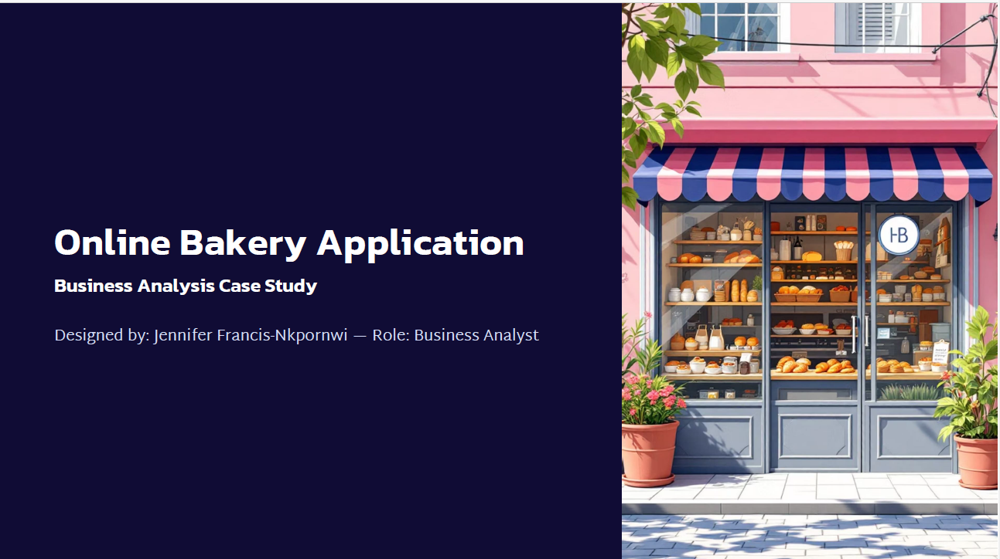

Women's Clothing E-Commerce Review Analysis
Mined 23,486 customer reviews to surface sentiment trends, recommendation behaviour, and product performance — then packaged the findings into a live Power BI dashboard.
Read the case study
Slyva Crescent Hotel Booking: Commercial Impact Analysis
Quantified $16.73M in lost revenue from cancellations and identified exactly which customer segments carried the most recoverable revenue.
Read the case study
WealthBridge Advisors: Investment Preference Analysis
Cleaned investor survey data and identified the KPIs that actually predict investment behaviour across 40 respondents.
Read the case study
Data Wrangling: Significant Earthquakes (1965–2016)
Cleaned and structured 23,000+ messy earthquake records in SQL into an analysis-ready dataset — the unglamorous half of the job, done right.
Read the case study
SmartSave Business Analysis Case Study
Full BA deliverable set — requirements, process models, and wireframes across seven app modules — for a digital savings product.
Read the case study
School Management System: Registration Process Redesign
Mapped a school's student registration workflow across three stakeholders as a full BPMN swimlane diagram, including the error paths.
Read the case study
Online Bakery App: Business Analysis Case Study
Defined the requirements behind a seamless online ordering experience — from browsing to same-day fulfilment — for a bakery going digital.
Read the case study